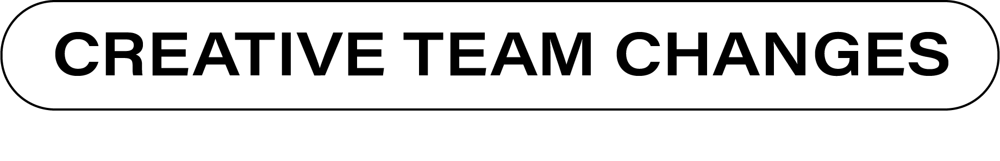
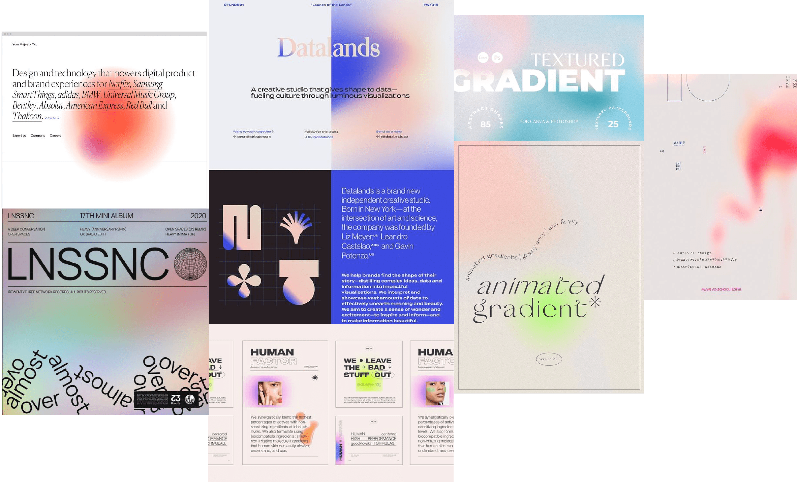
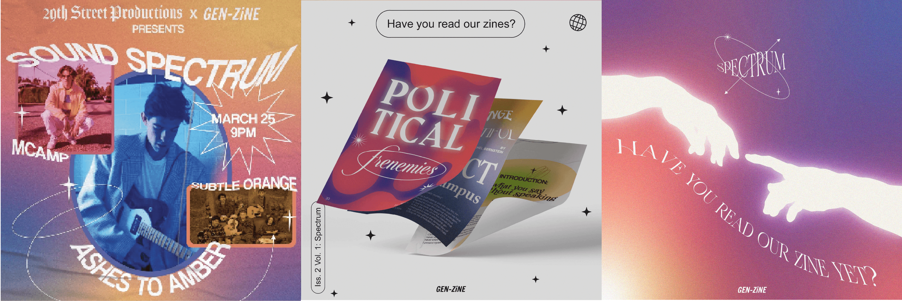
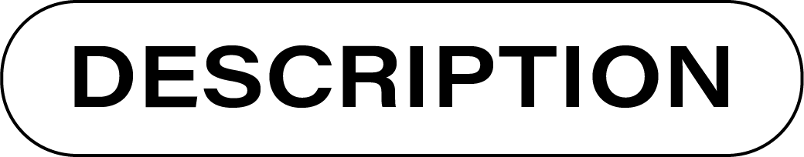
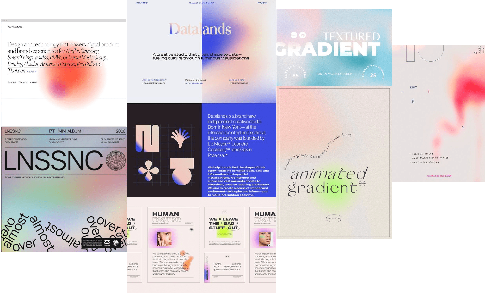
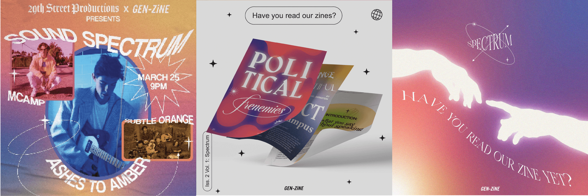
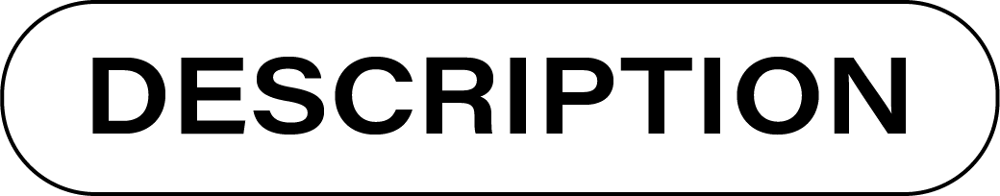

Creative Director

My main objective as creative director of GEN-ZINE was to organize the production process for the designers' ease. To do this, I split the team in two teams; a social media team and a zine team. Previously, designers created materials for all of GEN-ZINE's platforms. Designers created content for a blog, a social media account, and a zine, each with their own audience and content creation timeline. As a designer under this model, I was often frustrated with GEN-ZINE's organization and leadership. Once I was creative director, I wanted to clearly mark which content was due, when it was due, and the quality of work expected. For example, the group of designers that produced the zine went through weeks collaborating on the zine's color palette and aesthetic. In the end, this collaboration ensured each spread felt akin to all the other spreads in the zine —this was not the reality in the zine previous to my appointment as creative director.
 





“We chose the theme of this Zine, ‘Spectrum,’ as an organization. The dictionary definition of spectrum is as follows: used to classify something in terms of its position on a scale between two extreme or opposite points.
We live in a society that relies on binaries. We use binaries to categorize identity: straight or gay, male or female, introvert or extrovert. We also use binaries to label ideas: liberal or conservative, right or wrong. We find these labels to be comforting. They organize the world for us in easily understandable terms and reduce any uncertainty or confusion. But in relying on these binaries, we shove both individuals and ideas into narrowly defined categories —failing to encapsulate their multifaceted nature…By eliminating grey area for the sake of comfort, we eliminate space for rumination, exploration and growth”
—CECILIA POU, EDITOR IN CHIEF OF GEN-ZINE
We live in a society that relies on binaries. We use binaries to categorize identity: straight or gay, male or female, introvert or extrovert. We also use binaries to label ideas: liberal or conservative, right or wrong. We find these labels to be comforting. They organize the world for us in easily understandable terms and reduce any uncertainty or confusion. But in relying on these binaries, we shove both individuals and ideas into narrowly defined categories —failing to encapsulate their multifaceted nature…By eliminating grey area for the sake of comfort, we eliminate space for rumination, exploration and growth”
—CECILIA POU, EDITOR IN CHIEF OF GEN-ZINE